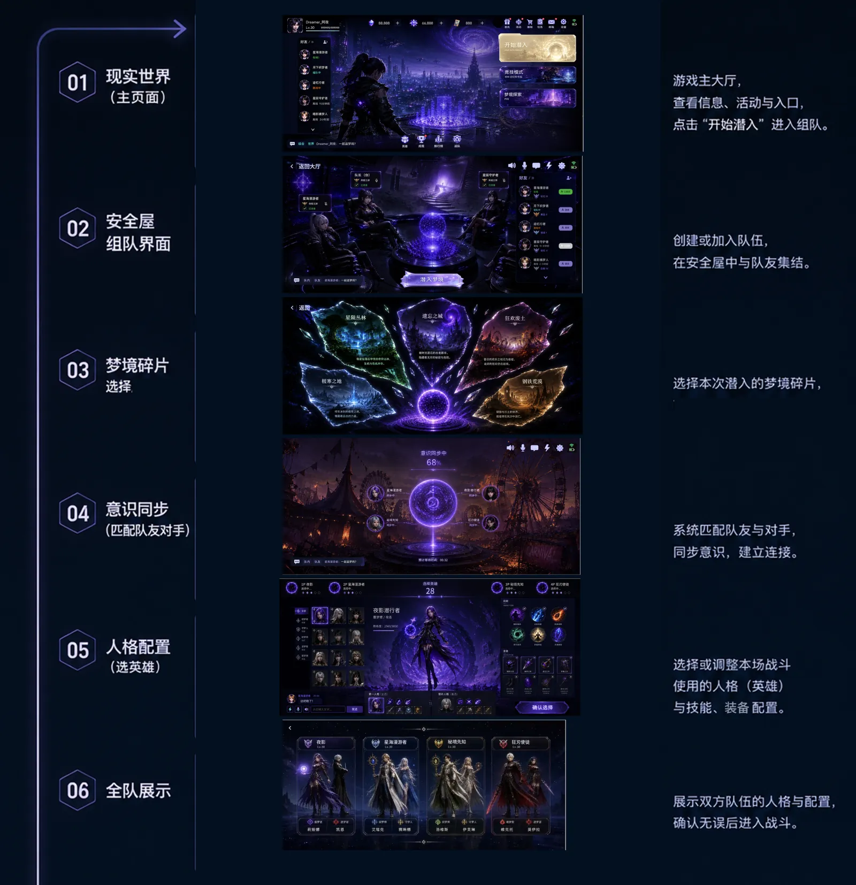
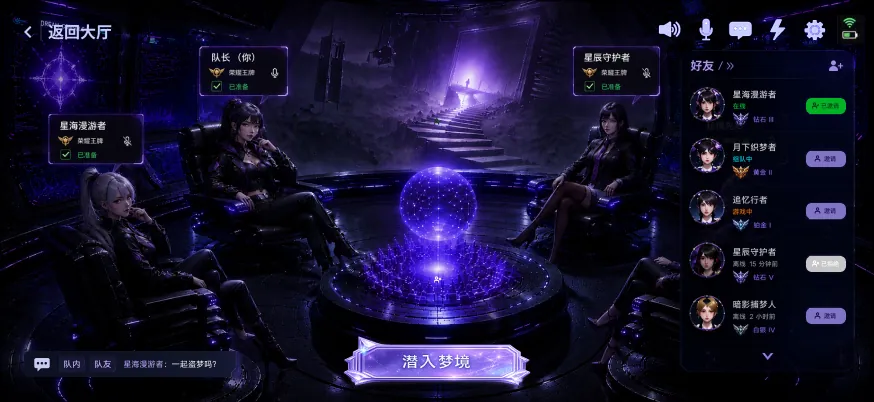
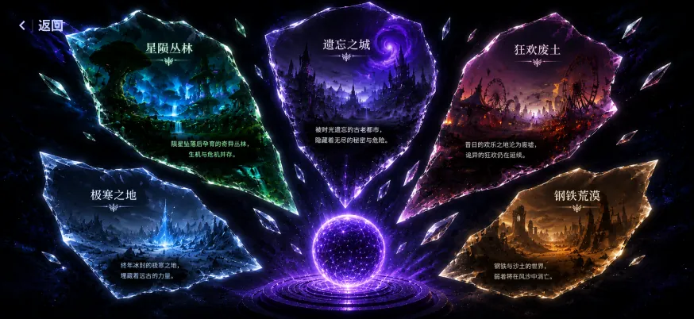
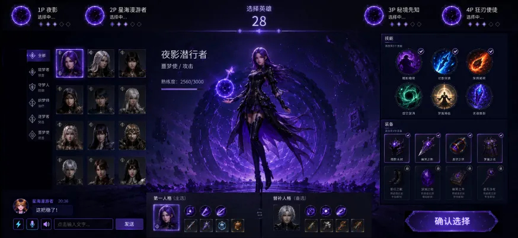

From Menu to Space
The lobby is treated as a dream safe-house, so preparation feels like entering a shared scene rather than clicking through separate menus.
01 Interaction Design Case Study
A dream-infiltration pre-battle flow where players connect consciousness, select dream fragments, configure personas, and fall into combat together.
02 Project Overview
Set in a future where memories can be extracted, stored, and altered, the interface reframes the pre-battle process as a dream thief operation. Teaming becomes consciousness access, map selection becomes dream-fragment selection, matching becomes synchronization, and hero setup becomes persona activation.
The lobby is treated as a dream safe-house, so preparation feels like entering a shared scene rather than clicking through separate menus.
Each required function is translated into a story action: access, fragment selection, synchronization, persona selection, and descent.
Invitation states, voice, chat, readiness, and lineup information stay visible to support fast multiplayer coordination.
03 Experience Flow
Players enter the operation from the main interface and check social status.
Friends connect as teammates through invitation, waiting, accepted, and declined states.
Maps are presented as fragments of different dream worlds, each with distinct atmosphere.
Matching is visualized as a synchronization process between teams.
Players choose dream personas, skills, and equipment for the mission.
The final squad presentation confirms both lineups before battle begins.

04 Team Formation
Instead of treating grouping as a neutral friend-list action, the interface places teammates around a dream core. Invite, waiting, accepted, and declined states remain visible in the same scene, making team readiness easier to read.

05 Dream Worlds
Fragments, color temperature, and environmental imagery help players recognize each world quickly. The goal is to make selection emotional and spatial before it becomes tactical.

06 Combat Configuration
Players are not presented as generic heroes, but as dream personas with distinct roles: scout, defender, healer, attacker, burst damage, and disruption. Skills and equipment are organized around the selected persona while team status remains visible.

07 Takeaway
This design turns waiting into visible social status, selection into worldbuilding, and setup into an immersive pre-battle ritual. It also leaves room for future extensions such as persona skins, dream-entry animations, squad poses, personal dream cards, defeat effects, and mastery badges.